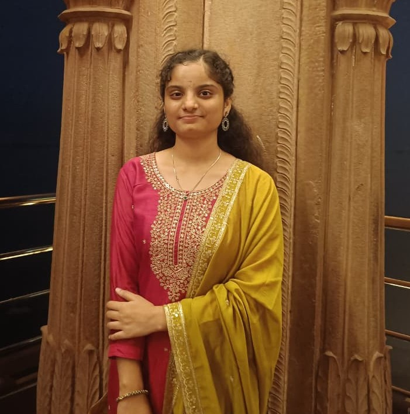

Curiosity drives me whether it’s learning a new technology, exploring a fresh idea, or expressing creativity
through art.
I’m currently pursuing Chemical Engineering while actively expanding my interests beyond my core discipline. I
am building my foundation in programming and web development, gradually shaping my journey into the tech space.
I enjoy combining analytical thinking with creativity to solve problems and create meaningful outcomes.
Beyond academics and technology, I express myself through art from pencil sketches to wall paintings turning
imagination into visual stories. This blend of structure and creativity defines how I approach both learning and
life.
I believe in taking initiative, creating value, and continuously growing one skill, one idea, and one step at
a time.

My educational journey reflects consistency, curiosity, and continuous growth. From my early schooling years, I developed a strong interest in science and logical thinking, which later influenced my decision to pursue me in IIT’s.Throughout my higher secondary education, I focused on strengthening my fundamentals while actively exploring new areas of learning. This phase helped me build discipline, adaptability, and a mindset of continuous improvement.
I am currently in the 4th year of my B.Tech at IIT (BHU), Varanasi, recognized as one of India’s top 10 engineering institutes by NIRF. I earned my place here by successfully clearing JEE Advanced, one of the country’s most competitive entrance exams. This achievement reflects not only my academic abilities but also my dedication, perseverance.
Generated and analyzed electrochemical datasets from Lithium–Sulfur battery experiments across 50+ charge–discharge cycles using BioLogic workstations and EC-Lab software. Extracted structural features from XRD, Raman spectroscopy, and FESEM data to evaluate cycling stability, achieving 1093 mAh g⁻¹ capacity with ~82% retention after 100 cycles. Structured datasets linking synthesis parameters with electrochemical performance metrics to support comparative analysis and future predictive modeling initiatives.